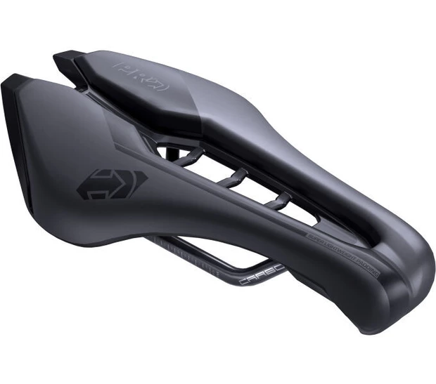

PRO
Stealth TSA 1.1
Sedlo pro triatlon a časovky s polstrovanou špičkou.
- Cena
- Zdarma
- Vratná záloha
- 1 000 Kč
- Zápůjčka
- Zápůjčka až na 7 dní
Sedlo speciálně přizpůsobené pro triatlon a časovky, s prvky modelu Stealth. In-mold konstrukce snižuje hmotnost a přináší aerodynamické, měkké tvary. Polstrovaná špička a podpůrná sedací část se širokým výřezem pro ventilaci a uvolnění tlaku. Tvar je optimalizovaný podle naměřených dat z bikefitting.com.
Pro koho je
- Triatlon a časovky
- Jízda v hluboké aero pozici na špičce sedla
Parametry
- Rozměr
- 255 × 132 mm
- Ližiny
- karbon
- Konstrukce
- in-mold
Rezervovat test
Vyzvednutí i vrácení v otevírací době (po a pá 11–19, út–čt 9–17).